또봄 활동
배우고, 떠나고, 이야기하며 — 청년의 봄을 다시 피웁니다.
또봄클래스
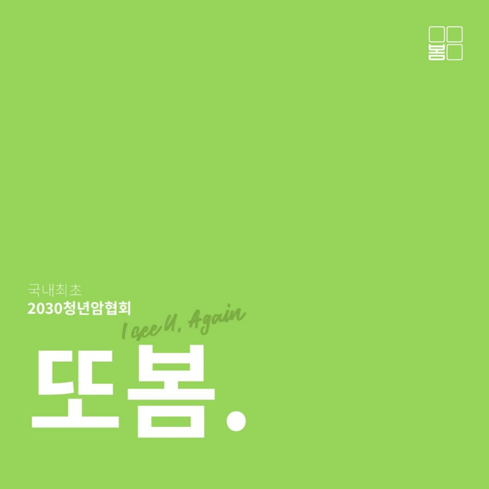
배우러 왔다가, 친구를 얻어 갑니다.
배우는 건 핑계입니다. 캘리그라피, 사진, 한방 상담까지 — 같은 시간을 지나온 사람 옆에 앉는 두 시간이 진짜입니다.
그동안 함께한 클래스
앎 캠페인 — 여행 프로젝트
또봄은 여행에서 시작됐습니다.
“다 나으면 저기 가야지.” 붙들 것 하나가, 항암치료를 견디게 했습니다.
80일간의 세계일주, 그리고 300권의 포토북
말기암을 이겨내고 1년 뒤, 혼자 80일간 세계를 돌았습니다. 그때 찍은 사진으로 포토북 ‘당신을 또 봅니다’를 만들었습니다.
읽는 책이 아니라 가고 싶은 곳을 직접 적는 책입니다. 항암치료 중에는 글을 오래 읽기 어렵기 때문입니다. 이 책에 적은 버킷리스트를 또봄에 보내주면, 그중 함께 갈 사람을 뽑아 훗날 진짜로 함께 떠났습니다.
크라우드펀딩에서 한 권을 사면 한 권이 병원으로 가는 방식으로 진행해, 연세대병원 · 가톨릭병원 · 서울대병원에 각 100권씩 전했습니다.
- 80일혼자 떠난 세계여행
- 300권3개 병원에 기부
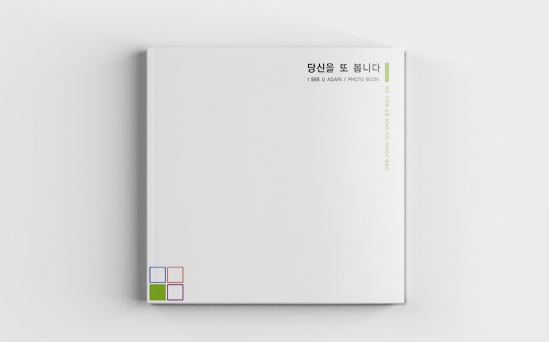
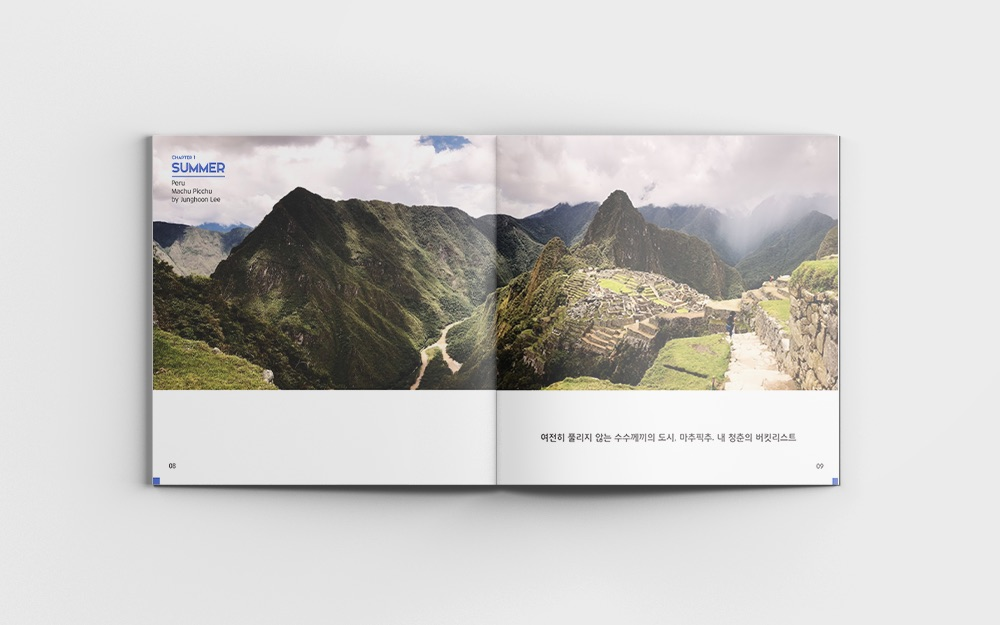
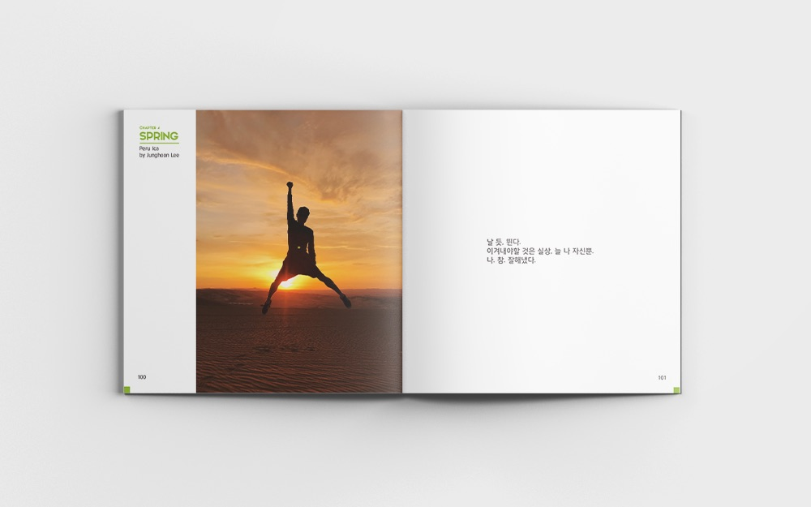
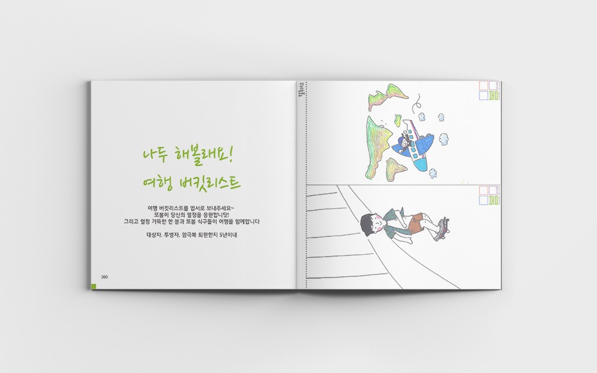
혼자 갔던 길을, 이제 같이 갑니다
책에 적어 보낸 버킷리스트 중에서 함께 갈 사람을 뽑아 실제로 떠났습니다. 치료를 견딘 사람들이 함께 서핑을 배우고, 모래 위에 I SEE U AGAIN을 세웠습니다.
- 첫 번째 태국 치앙마이 첫 해외여행
- 두 번째 동해 첫 국내여행
- 세 번째 스키캠프
- 네 번째 남해 여름캠프
이후 코로나로 잠시 멈췄습니다. 다시 떠날 준비를 하고 있습니다.
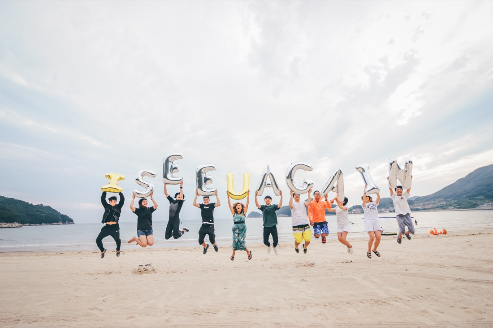
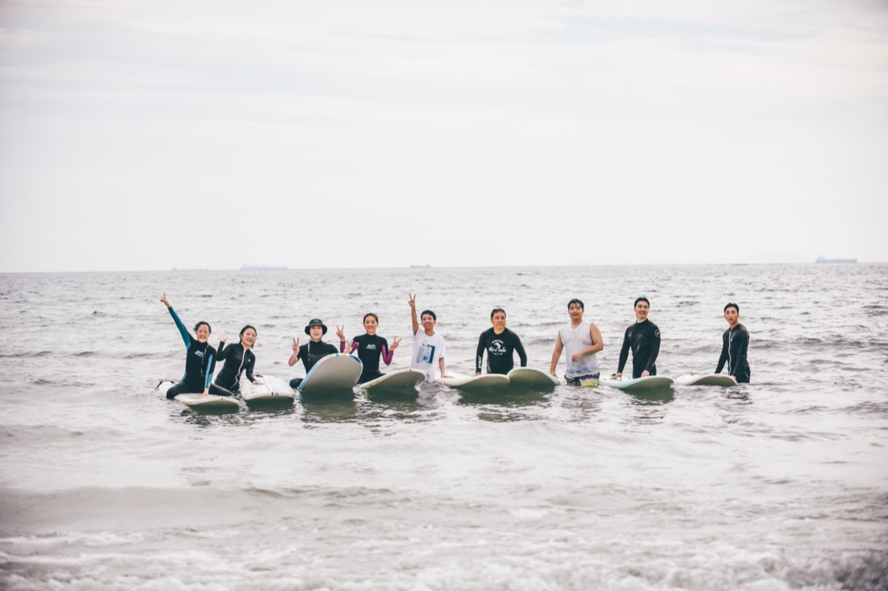
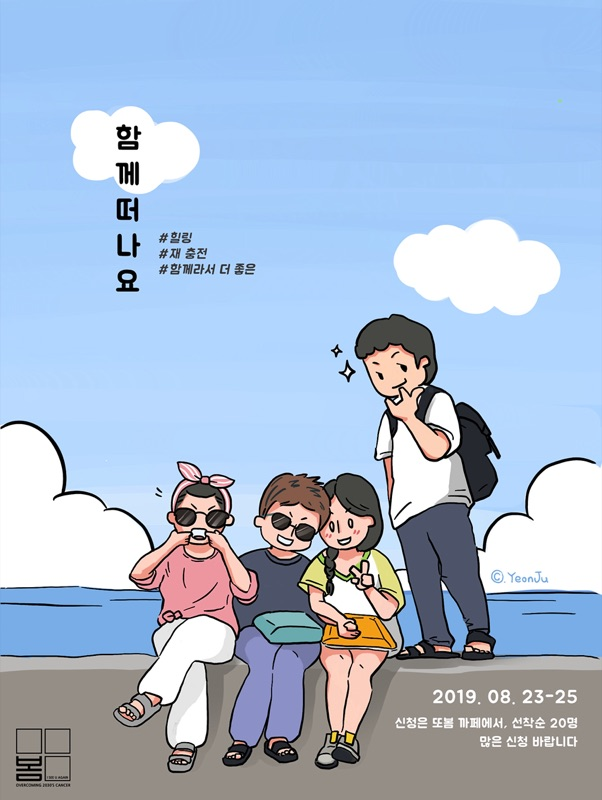
Cheer UP 곧, 봄
이야기하고, 노래하고, 같이 웁니다.
암 이야기를 꺼내면 대화가 멈춥니다. 그래서 노래를 같이 들으면서 하기로 했습니다.
중요한 건 객석입니다. 겪은 사람과 겪지 않은 사람이 나란히 앉아 같은 이야기를 들을 때, 편견은 설득하지 않아도 허물어집니다.
첫 번째부터 세 번째까지는 인디 가수들과 함께했습니다. 이들 역시 가족 중에 암 경험자가 있어, 또봄 로고가 담은 여름 · 가을 · 겨울 · 봄을 한 회차씩 주제로 삼아 이야기를 나눴습니다.
네 번째는 비보잉 세계대회 우승 경력의 크루 M.B crew와 함께했습니다. 이들도 주변에 암 경험자가 있어 함께 놀고 이야기를 나눴고, 이번엔 암 경험자뿐 아니라 일반 관객도 함께해 편견을 허물고 누구나 자유로울 수 있는 자리를 만들었습니다.
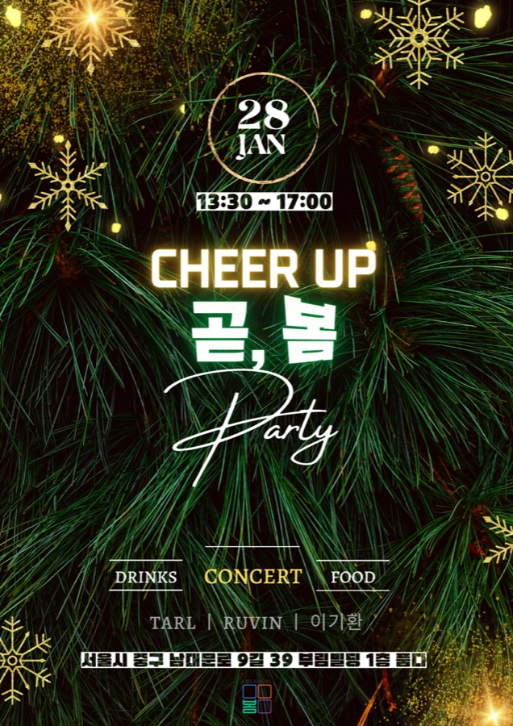
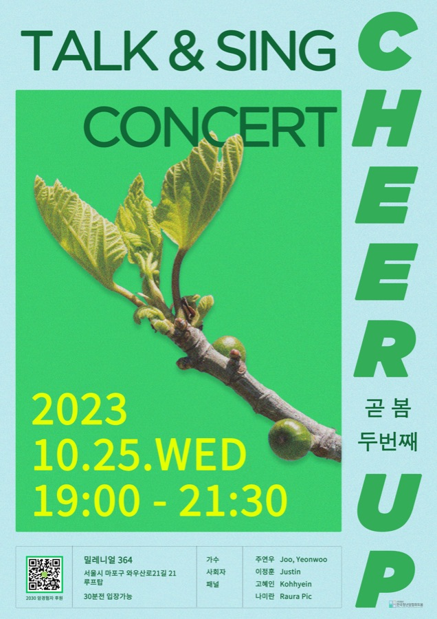
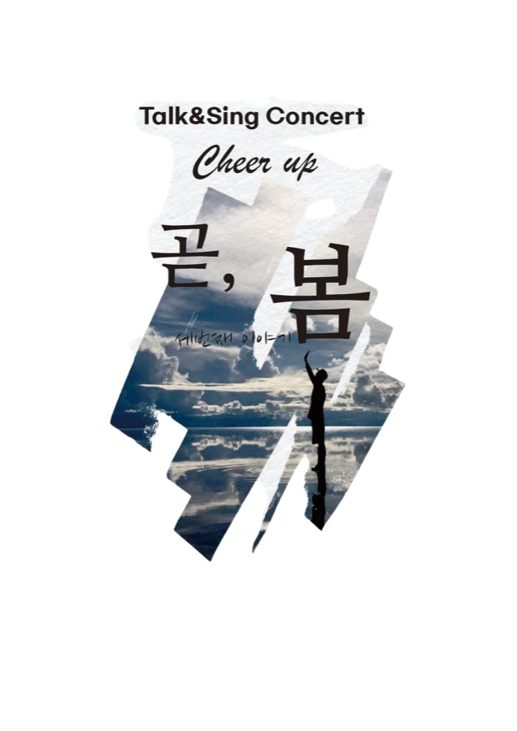
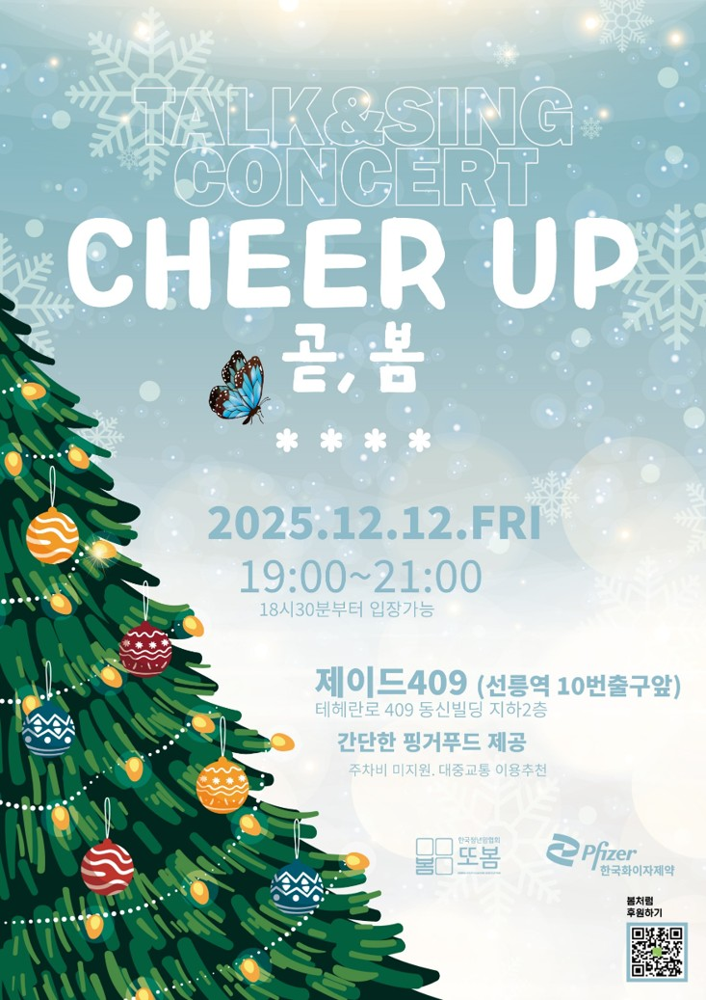
또또봄TV
먼저 지나온 사람의 목소리로.
검색하면 정보는 나옵니다.
나오지 않는 건 ‘겪어 보니 어땠는지’입니다.
역경을 이겨낸 이들을 인터뷰해 그 자리를 채웁니다.
정확한 정보와 진짜 경험을 한 편에 같이 담습니다.